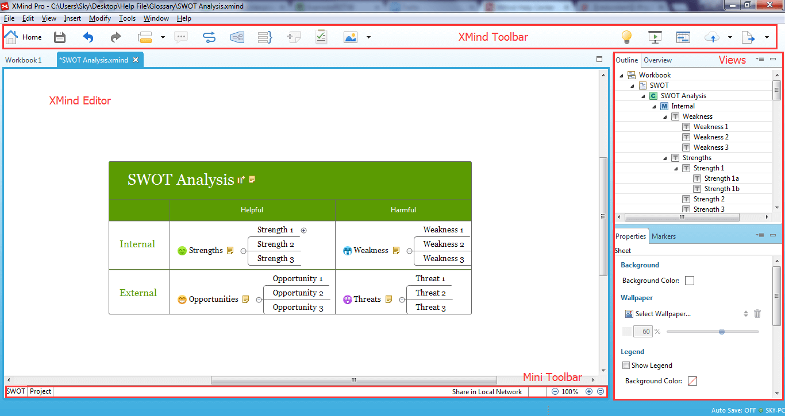

Glossary
This glossary is provided for your information only; it is not meant to be relied upon as a complete or authoritative description of the terms defined below or of the privacy and/or security ramifications of the technologies described.

Interface- XMind Toolbar:This is a group of icons that represent different commands.
- XMind Editor:This is the space where users can create their map.
- Mini-toolbar:The mini-toolbar is underneath the editor. you can Switch Sheets, Quick Filter, and Zoom the map here easily.
- View:View plays an important role in XMind. There are 11 different views. View is used to format the map, simplify to usage, and enhance the efficiency. Each view has a view toolbar that can be easily moved and positioned to any place by dragging and moving , even out of XMind and on your desktop.
3 Different Pricing Model
- XMind Plus: XMind Plus is a life-time commerciual software product based on XMind opensource. It has some other tools for sharing and innovation.
- XMind Pro: XMind Pro is an a life-time commerciual software product offering more advanced business features.
- XMind Pro Subscription: XMind Pro Subscription is a commercial software product with the same features with XMind Pro, which uses subscription mode.
Others
- Workbook and Sheets: Every XMind file is a workbook, which can have multiple sheets. Each sheet is a separated map.
- Topic:The topic is the central element in the map.
- Xmind ID: XMind ID is the ID used to sign into your account on xmind.net.
- XMind OpenSource: XMind OpenSource is an open source project. It offers all basic mind map functions.
- XMind Share: XMind Share is a web service that allows users to share their mind maps online. It's totally free.